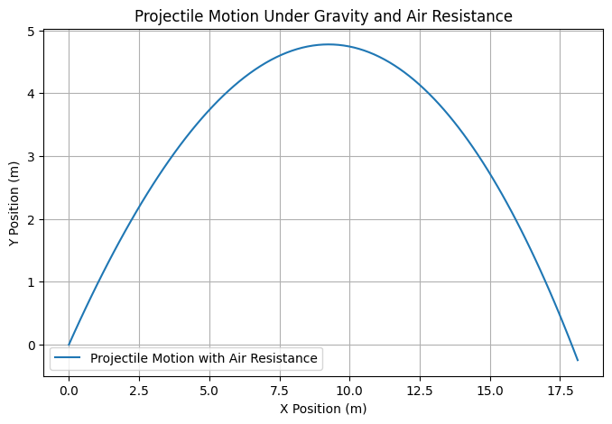

Problem 1
Investigating the Range as a Function of the Angle of Projection
1. Equations of Motion
- The equations governing projectile motion with air resistance are derived from Newton’s second law. We consider a projectile of mass \(m\) moving under the influence of gravity and an opposing air resistance force proportional to velocity.
The equations of motion are given by:
Where:
- \(m\) = mass of the projectile (kg)
- \(g\) = gravitational acceleration (9.81 m/s²)
- \(b\) = air resistance coefficient (kg/s)
- \(x', y'\) = velocity components
2. Initial Conditions
The initial conditions define the starting point and initial velocity components of the projectile.
(Starting position at the origin)
(Initial velocity components in m/s)
3. Deriving the Equations of Motion
Step 1: Solve for Horizontal Motion
From the equation:
Rewriting:
This is a first-order linear differential equation in \(x'\). The general solution for velocity is:
To find the horizontal displacement, integrate:
Step 2: Solve for Vertical Motion
From the vertical motion equation:
Rewriting:
Solving for \(y'\):
Integrating to get \(y(t)\):
For small air resistance (\(b \approx 0\)), this simplifies to:
Calculate the Time of Flight
The projectile reaches the ground when \(y = 0\). Using the simplified equation:
Setting \(y = 0\) and solving for \(t\):
This gives two solutions:
Thus, the total time of flight is:
Derive the Range Equation
- The range is the horizontal distance at \(T\):
$$ R = v_0 \cos\theta \cdot T$$
- Substituting \(T\):
$$ R = v_0 \cos \theta \cdot \frac{2 v_0 \sin \theta}{g} $$
- Using the trigonometric identity \(2 \sin \theta \cos \theta = \sin 2\theta\) , we obtain:
$$ R = \frac{v_0^2 \sin 2\theta}{g} $$
Find the Optimal Angle for Maximum Range
- The range depends on \(\sin 2\theta\), which is maximized when \(2\theta = 90^\circ\), or \(\theta = 45^\circ\).
- Thus, the optimal angle for maximum range is \(45^\circ\).
Step 3: Analyze How Range Changes with Angle
1. Varying the Angle from 0° to 90°
- Compute \(R\) for multiple angles and observe how it changes.
2. Effects of Initial Velocity
- Increase or decrease \(v_0\) and check how it impacts $ R $.
3. Effects of Gravity
- Consider different values of \(g\) (e.g., Earth vs. Moon) and see how the range varies.
4. Find the Symmetry
- The equation \(R = \frac{v_0^2}{g} \sin 2\theta\) is symmetric, meaning:
- \(\theta = 30^\circ\) and \(\theta = 60^\circ\) give the same range.
- \(\theta = 20^\circ\) and \(\theta = 70^\circ\) also give the same range.
Step 4: Practical Applications
1. Sports Applications
- Optimizing kick angles in soccer, golf, or basketball for maximum range.
2. Ballistics & Military Applications
- Determining the best firing angle for artillery.
3. Rocket Science
- Understanding launch angles for spacecraft trajectories.
Step 5: Implementation in Python
import numpy as np
import matplotlib.pyplot as plt
from scipy.integrate import solve_ivp
# Parameters
m = 1.0 # Mass (kg)
g = 9.81 # Gravity (m/s^2)
b = 0.1 # Air resistance coefficient (kg/s)
# Initial conditions
x0, y0 = 0.0, 0.0 # Initial position (m)
vx0, vy0 = 10.0, 10.0 # Initial velocity (m/s)
# Define the equations of motion with air resistance
def equations(t, state):
x, vx, y, vy = state
dxdt = vx
dvxdt = - (b / m) * vx # Air resistance in x-direction
dydt = vy
dvydt = -g - (b / m) * vy # Gravity and air resistance in y-direction
return [dxdt, dvxdt, dydt, dvydt]
# Time span for simulation
t_span = (0, 2)
t_eval = np.linspace(0, 2, 100)
# Solve the system
sol = solve_ivp(equations, t_span, [x0, vx0, y0, vy0], t_eval=t_eval)
# Extract solution
x, vx, y, vy = sol.y
# Plot results
plt.figure(figsize=(8, 5))
plt.plot(x, y, label="Projectile Motion with Air Resistance")
plt.xlabel("X Position (m)")
plt.ylabel("Y Position (m)")
plt.title("Projectile Motion Under Gravity and Air Resistance")
plt.legend()
plt.grid()
plt.show()

Step 6: Discussion & Limitations
1. What does the graph show?
- A clear peak at \(\theta = 45^\circ\).
- Symmetry in range for complementary angles.
2. Limitations of the Model
- Assumes flat ground .
3. How to Improve the Model?
- Add drag force.
- Consider different launch heights.